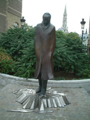
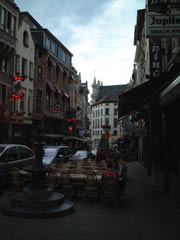
裏手の公園にはなぜかドンキホーテとバルトークの銅像。ブリュッセルと縁はないよーだけど…なぜ？
荷物を置いてグランプラスへ。
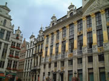
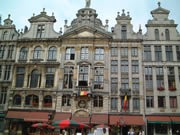
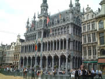
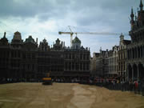
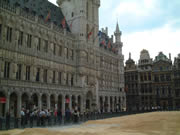
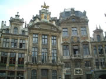
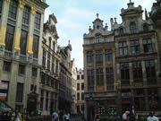
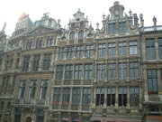
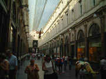
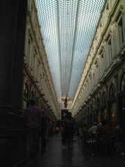
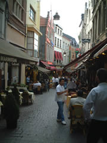
ギャルリー・サンチュベール。ガラスのアーケード。地震大国から来ると、ガラスの屋根は怖いです。
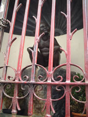
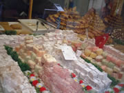
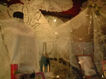
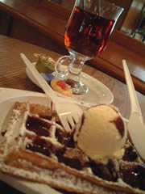
ふわふわさくさくしっとり。美味しくて。
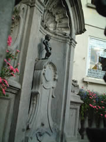
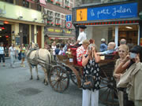
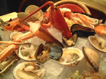
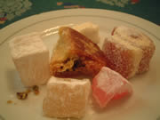
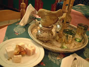
おみやげ物やに囲まれてます。
ひとしきり観光後、グランプラス横に伸びるイロ・サクロ地区、別名ぼったくり横丁でごはん。
ぼったくりの常套手段を使ってきます。「２人分じゃないと駄目〜」「特別メニューから選べ〜」だとか。
生シーフードを選ぶ。この季節にがっつん生牡蠣。ワインを流し込んでアルコール消毒。よっしゃ。
帰り道、トルコ菓子をショーウインドウに並べた店を発見。ふらふら入っていくつか注文してチャイと一緒にデザートタイム。
初めてたべたロクムは求肥のよーな食感と味。チャイはミントティ。お茶と一緒に運ばれた一輪挿しのよーな容器は何かしらん？店員さんのジェスチャーによると、この中にある水を体に擦り付けろとのこと。容器をひっくり返すとフム。
いい香りがする。沈丁花のよーなかおり。
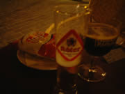

隣のお金持ち風カップルはiモードしてました。ブリュッセルはiモード推進中。